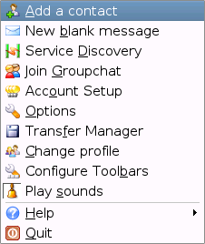
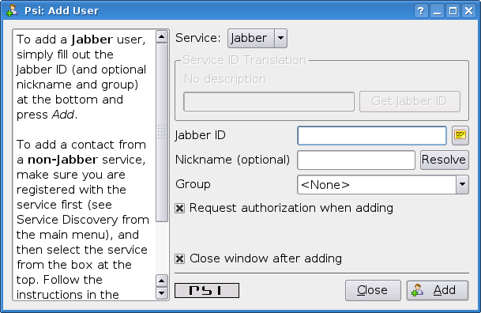
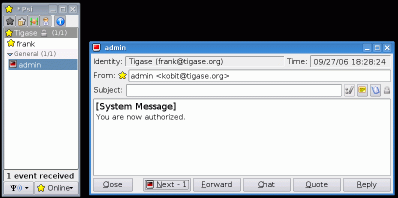

Click on Psi menu - the button next to the Online text. You will see something like this:

From all menu options select the top one - Add a contact:

The next window will display where you can enter your contact details:

You have to know the Jabber ID of the person you want to add to your contact list. Let’s assume, for example, you want to add Tigase server administrator’s Jabber ID to your contact list. So, after you enter these details the window will look like this:

Click the Add button.
Now you will see a confirmation window that a new person has been added to your contact list:

But there is more behind the scenes. Adding a contact to your Roster (contact list) usually means you can see whether the person is online and available to talk or not. The person however, may not wish you to see his presence. So, to make sure the other person accepts you as a friend Psi sent a request to the address you just entered with the question of whether he agrees to show his presence to you.
You won’t be able to see the users availability until he sends confirmation.
Once the other user sends confirmation back, you will usually receive 2 system events:

Click on the contact to see a window with these messages:

One message just says you have been authorized by the other user:

So you simply click Next to see the second message.
The second message is a bit more interesting. It contains the question of whether you also authorize the other user to see your presence. If you want to accept this request just click Add/Auth.

Finally main Psi window with your new contact:

Well done!
You are ready to start Jabbering. Good luck.
Where to go next? For detailed Psi documentation refer to the program Wiki page: http://psi-im.org/wiki/Main_Page